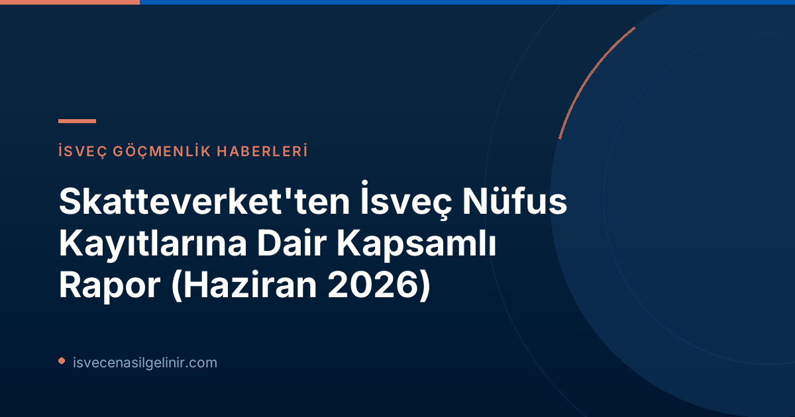

Skatteverket'in Nüfus Raporunun Temel Bulguları
Her yıl olduğu gibi, Skatteverket 2026 yılında da ülkede kayıtlı nüfusa ilişkin detaylı bir durum değerlendirme raporu yayımladı. Bu rapor, yalnızca sayısal veriler sunmakla kalmıyor, aynı zamanda nüfus kayıt sistemindeki açıklar ve bunların toplumsal etkileri hakkında da önemli bilgiler içeriyor.
Genel Nüfus ve Değişimler
2025 yılının sonunda İsveç'te kayıtlı 10.605.529 kişi bulunuyordu. Bu rakam, bir önceki yıla göre yaklaşık 18.000 kişilik bir artışa işaret ediyor. Ancak bu artışın dinamikleri dikkat çekici: İsveç'e yeni taşınarak nüfusa kaydolan kişi sayısı %24 oranında azalırken, doğum yoluyla nüfusa katılanların sayısı bir önceki yıla paralel seviyede seyretti.
Kayıt Hataları ve Toplumsal Etkileri
Raporun en kritik bulgularından biri, İsveç nüfusunun tahmini olarak %2 ila %3'ünün hatalı kayıtlı olması. Skatteverket, bu hatalı kayıtların büyük zararlara yol açabileceğini vurguluyor. Yanlış ödemeler, hatalı vergilendirme ve kimlik hırsızlığı gibi organize suç faaliyetlerinde kötüye kullanımlar, bu sorunların başında geliyor. Skatteverket Folk Registrasyon Departmanı Bölüm Başkanı Michael Högback, "Çoğunluk doğru kayıtlı olsa da, var olan hatalar büyük zararlara neden olabilir," ifadelerini kullandı.
| Hata Türü | Tahmini Kişi Sayısı | Açıklama |
|---|---|---|
| Hatalı Kayıtlı (Taşınması Gerekenler) | En az 65.000 kişi | İsveç'ten taşınmasına rağmen kayıtlı görünenler. |
| Kaydedilmesi Gereken Ama Kayıtsız Olanlar | En az 23.500 kişi | Gereklilikleri karşılamalarına rağmen kayıtlı olmayanlar. |
| Yanlış Adrese Kayıtlı Olanlar | 96.000 - 154.000 kişi | Mevcut adresleri ile kayıtlı adresleri uyuşmayanlar. |
Koordinasyon Numaraları (Samordningsnummer) Mercek Altında
Skatteverket'in raporu, kişisel kimlik numarası (personnummer) olmayan ancak İsveç'te belirli bir amaçla (örneğin kısa süreli çalışma, miras işlemleri) varlığı gereken kişilere atanan koordinasyon numaralarına (samordningsnummer) da özel bir bölüm ayırıyor.
Samordningsnummer Nedir ve Kimlere Verilir?
Samordningsnummer, İsveç'te kalıcı olarak ikamet etmeyen ancak kamu kurumları ile işlem yapması gereken kişilere verilen bir tür kimlik numarasıdır. Bu numara, bireylerin banka hesabı açmak, maaş almak veya bazı bürokratik işlemleri tamamlamak için kritik öneme sahiptir.
Kimlik Doğrulama Seviyeleri ve Mevcut Sorunlar
2025 yılının sonunda İsveç'te 477.113 aktif samordningsnummer bulunuyordu. Bu numaralar üç farklı kimlik doğrulama seviyesine sahipti: onaylanmış (styrkt), muhtemel (sannolik) veya belirsiz (osäker). Sevindirici bir gelişme olarak, kimliğini onaylayanların oranı 2023'teki %12'den 2025'te %45'e yükseldi. Ancak, rapor önemli bir soruna dikkat çekiyor: ne yazık ki, tüm kamu kurumları kendi sistemlerinde bir numaranın onaylanıp onaylanmadığını görüntüleyemiyor. Bu durum, yanlış anlamalara ve kötüye kullanımlara zemin hazırlayabilir. Skatteverket, bu bilginin kurumlar arasında daha etkin kullanılmasını arzu ediyor ve İsveç'te yaşama ve çalışma hakkına ilişkin net bilgilerin yaygınlaştırılmasını öneriyor.
Samordningsnummer Doğrulama Seviyeleri
- Onaylanmış (Styrkt): Kimlik belgeleri ile doğrulanmış.
- Muhtemel (Sannolik): Kimlik doğrulama için yeterli kanıt bulunmayan ancak makul gerekçelerle atanmış.
- Belirsiz (Osäker): Kimlik doğrulamasının yapılamadığı, bazı riskler taşıyan numaralar.
İsveç'teki yasal süreçler ve kimlik doğrulama hakkında daha fazla bilgi almak isteyenler sverigemedborgarskapsprov.com adresini ziyaret edebilirler.
Kişisel Kimlik Numarası (Personnummer) veya Samordningsnummer Olmayanlar
Rapor, İsveç'te ne kişisel kimlik numarası ne de koordinasyon numarası olmayan, ancak çeşitli kurumsal kayıtlarda iz bırakmış önemli bir gruba da dikkat çekiyor. Bu grubun büyüklüğü yaklaşık 110.000 ila 185.000 kişi arasında tahmin ediliyor.
Kayıt Dışı Nüfusun Büyüklüğü ve Kategorileri
Bu grup, farklı yasal statülere sahip bireyleri içeriyor:
- Yasal İkamet Hakkı Olanlar: 86.400 kişinin ikameti biliniyor ve ülkede kalma hakları var.
- Yasal İkamet Hakkı Olmayanlar: Yaklaşık 22.400 kişinin ikameti biliniyor ancak ülkede kalma hakları yok.
- İkameti Bilinmeyenler: Yaklaşık 30.000 kişinin ikameti bilinmiyor ve ülkede kalma hakkı olup olmadığı belirsiz.
Skatteverket'ten Çözüm Önerileri
Anders Klaar, Skatteverket'in rapor lideri, bu grubun bir kısmını görünür kılmanın bir yolunun, kendilerine daha yüksek oranda koordinasyon numarası atanması olabileceğini belirtiyor. Bu, özellikle yasal hakları olan ancak sisteme entegre olamayan kişiler için önemli bir adım olabilir.
Skatteverket'in Suçla Mücadele ve Kontrol Tedbirleri
Skatteverket, hatalı kayıtların ve kimlik bilgilerinin kötüye kullanılmasının toplumsal maliyetleriyle mücadele etmek amacıyla kontrollerini artırmış ve bilişim sistemlerini geliştirmiştir.
Artan Kontroller ve Biyometrik Verilerin Önemi
2025 yılı boyunca nüfus kayıt kontrollerine hız veren Skatteverket, hataları en aza indirmek için yeni bilişim sistemleri ve hizmetler geliştirmiştir. Michael Högback, özellikle organize suç çeteleri tarafından kullanılan yanlış kimliklerin toplum için en büyük sonuçlara yol açtığını belirtiyor. Yüz tanıma ve parmak izi gibi biyometrik verilerin toplanması, ömür boyu saklanması ve kolluk kuvvetleriyle paylaşılması, suçla mücadelede çok faydalı olacaktır.
Yanlış Kimliklerin Topluma Maliyeti
Yanlış kayıtların sadece bürokratik bir sorun olmadığını, aynı zamanda topluma yüksek maliyetler getirdiğini vurgulayan Skatteverket, özellikle başka ülkelere taşınmasına rağmen İsveç'te hala kayıtlı görünen kişilerin oluşturduğu risk alanına öncelik veriyor. Bu durum, welfare sisteminden haksız yere yararlanmalara ve vergi kayıplarına neden olabilmektedir.
Geleceğe Yönelik Öneriler ve Yasal Düzenlemeler
Skatteverket, mevcut nüfus kayıt hatalarının yeterince azalmadığını belirterek, daha fazla kontrol, teknik destek ve kurumlar arası daha iyi bilgi alışverişi ve iş birliği çağrısında bulunuyor. Aşağıda, doğru nüfus kayıtları, doğru kimlikler ve İsveç'te kimlerin ikamet ettiğine dair daha iyi bilgi için Skatteverket'in sunduğu önemli öneriler yer almaktadır:
Skatteverket'in İleriye Dönük Önemli Teklifleri
- Biyometrik Veri Kullanımı: Skatteverket'in biyometrik veri (yüz görüntüsü, parmak izi gibi) kullanımını artırması, bu bilgileri kişinin yaşamı boyunca saklaması ve iş birliği yapan kurumlarla paylaşabilmesi. Bu veriler hem kayıtlı kişiler hem de koordinasyon numarası olanlar için gerekli.
- Şeffaf Bilgilendirme: Bir kişinin İsveç'te ikamet etme ve çalışma hakkına ilişkin net bilgilerin koordinasyon numaralarıyla ilişkilendirilmesi ve yanlış anlamaları ve kötüye kullanımları azaltmak için kamuoyuna duyurulması.
- Sistem Entegrasyonu: Hükümetin, koordinasyon numaralarını yöneten kurumlara, bu numaralarla bağlantılı kimlik doğrulama bilgilerini alabilecek sistem adaptasyonlarını yapmaları konusunda talimat vermesi.
- Koordinasyon Numarası Ataması: Kısa süreli izin başvurusunda bulunan kişilerin kural olarak koordinasyon numarası ile kaydedilmesi.
- Nüfus Kayıt Yasasının Gözden Geçirilmesi: Toplumun son 35 yılda büyük değişiklikler geçirmesi nedeniyle, Folkbokföringslagen'in (Nüfus Kayıt Yasası) net, amaca uygun ve modern bir yasal düzenleme oluşturulması amacıyla gözden geçirilmesi.
Sonuç ve Bireyler İçin Önemli Çıkarımlar
Skatteverket'in bu raporu, İsveç'teki nüfus kayıt sisteminin mevcut durumuna ve gelecekteki iyileştirmelere ışık tutuyor. Hem ülkeye yeni gelecekler hem de mevcut sakinler için doğru kimlik ve adres bilgilerine sahip olmak, yasal süreçlerin sorunsuz ilerlemesi ve toplumsal düzenin korunması açısından hayati önem taşıyor. Rapor, sadece kurumların değil, bireylerin de kendi kayıtlarının doğruluğunu düzenli olarak kontrol etmeleri gerektiğinin altını çiziyor. Gelecekte yapılacak yasal düzenlemeler ve teknolojik geliştirmeler, İsveç'in nüfus kayıt sistemini daha güvenli ve şeffaf hale getirmeyi hedefliyor.
Referanslar
İsveç'te Yaşam ve Göçmenlik Süreçleri Hakkında Daha Fazla Bilgi Edinin!
İsveç'teki bürokratik süreçler, oturum izinleri, vatandaşlık ve daha fazlası için kapsamlı rehberlerimize göz atın. Bilgilik ve güncel duyurularla sorularınız yanıt bulsun.